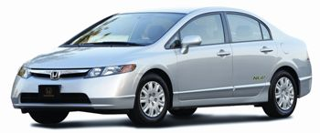

HONDA
2007 HONDA CIVIC GX;
Fuel
Natural Gas, refill at home with the
Phill
device;
Price
$24,590;
MPG City/Hwy.
28/39;
Annual Fuel Cost
$680;
Air Pollution Score
9.5;
Greenhouse Gas Score
9;
Drive Score
5.